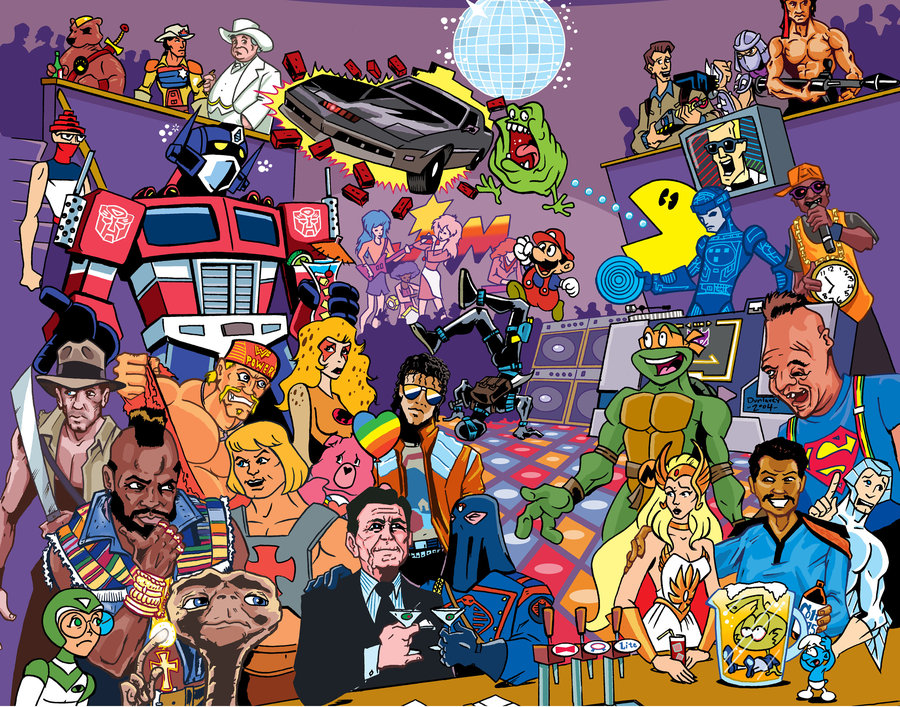

Olá, sou Leonardo Rodrigues Dezoti Ferraz, um jovem de 20 anos natural da acolhedora cidade de Itapira, situada no interior de São Paulo. Permita-me compartilhar um pouco mais sobre mim e minhas paixões.
Desde sempre, tenho sido um entusiasta da vida ativa e saudável. Uma das minhas maiores paixões é a musculação, que me permite desafiar meus limites físicos e mentais enquanto cultivo um estilo de vida equilibrado.
No entanto, minha paixão por atividades físicas não é minha única fonte de entretenimento. Sou também um ávido jogador de video games, mergulhando em mundos virtuais repletos de desafios e aventuras. Quando não estou derrotando monstros ou explorando mundos digitais, dedico meu tempo a assistir séries, animes e filmes. Essas formas de entretenimento proporcionam-me momentos de descontração, reflexão e até mesmo inspiração.
Os meus principais hobbies são:

Praticar esportes
Praticar musculação

Jogar games
